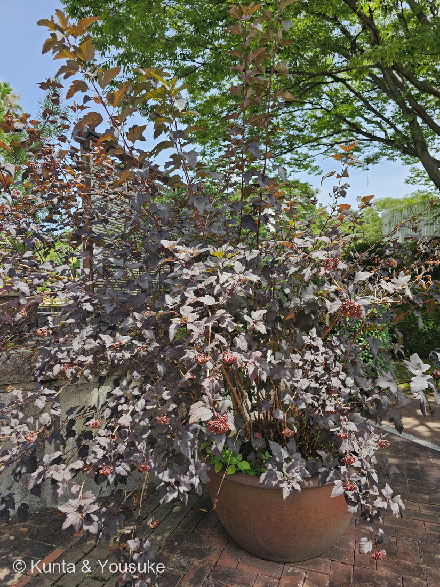
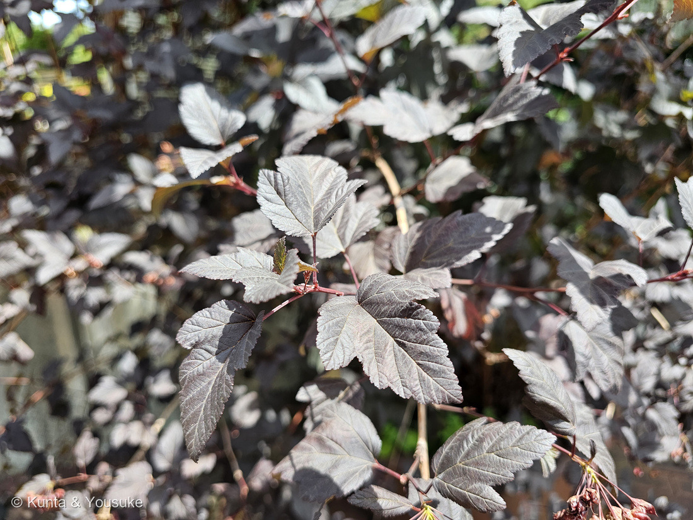
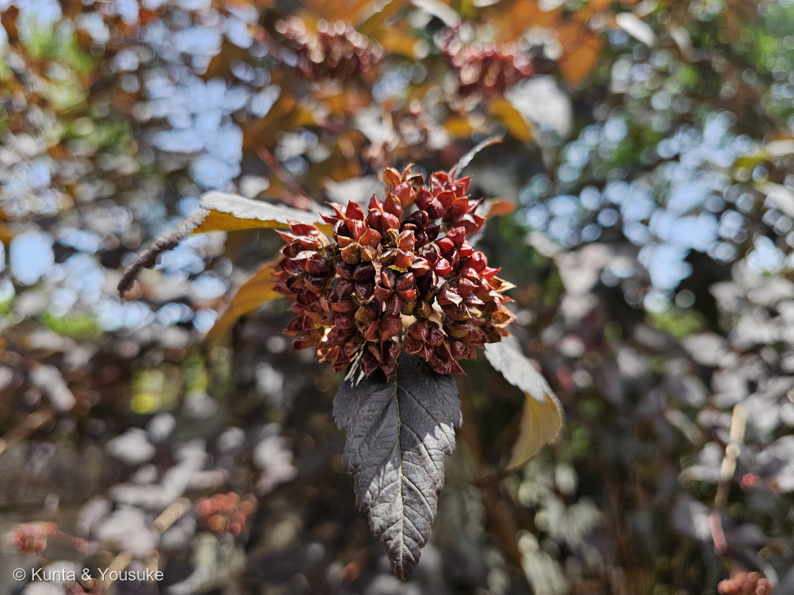
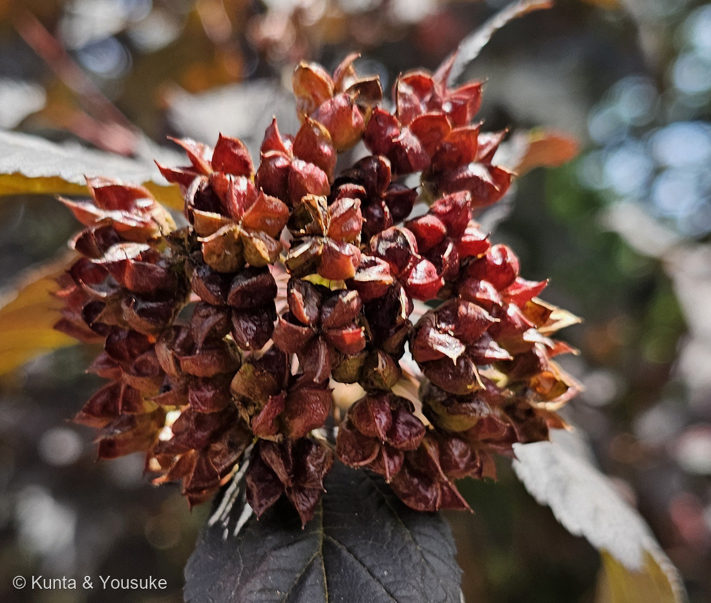

地図を読み込んでいるよ…
🔍 写真も地図も、押しているあいだ拡大して見られるよ（スマホは指を置いてすこし待ってね）。
🌍 の地図＝この子がもともと自生している場所を緑に。北アメリカ東部。くわしくは下の地図の説明を見てね。
⭐北アメリカ東部の低木だよ。英語版Wikipediaは「native to eastern North America」とし、くわしくは「from New York to Minnesota and South Dakota, south to Florida, Arkansas and Kansas」とする。⚠⚠この緑は、ほんとうよりずっと広い＝地図はアメリカ合衆国をまるごと塗っているけれど、実際にいるのは東側のおよそ半分。⭐出典が名指ししているのは、東はニューヨークからフロリダまで、西はミネソタ・サウスダコタ・カンザスあたりまで＝⭐ロッキー山脈より西や、西海岸は入っていないよ。⭐⭐⭐そして、この地図でいちばん大事なのは「日本が緑じゃないこと」＝日本にいるアメリカテマリシモツケは、ぜんぶ園芸で入ってきたもの――和名の頭に「アメリカ」がついているのは、そのためだね。⚠ぼくらが会ったのは広島の園の鉢植え＝もちろんこの緑の外だよ。⭐⭐同じバラ科の024 シモツケは日本の草＝⚠あちらはシモツケ属、こちらはテマリシモツケ属――⭐「シモツケ」という名前が海をまたいで、こんなふうに残っているのが面白いところ。⭐北アメリカ原産の子は、図鑑では188 ラクウショウや247 センペルセコイアともつながるよ。
⚠ 地図は国（日本と中国だけ県・省）までしか塗れないから、ほんとうの分布より広く見えていることがあるよ。地図はだいたいの場所。正確なところは、上の文を見てね。
アメリカテマリシモツケ（亜米利加手毬下野）の銅葉品種
Physocarpus opulifolius
別名 ナインバーク（ninebark・「九枚の樹皮」） ── ⭐樹皮が薄い紙のように何枚も剥がれることから 原産 北アメリカ東部
バラ科 · Rosaceae（テマリシモツケ属 Physocarpus・バラ目 Rosales）── ⭐7人目のバラ科（024 シモツケ・030 バラ・043 ワイルドストロベリー・139 サクラ・143 シャリンバイ・255 カリン）／⭐⭐⭐テマリシモツケ属ははじめて／⚠科は増えないので103科のまま
燻太さんの見立て「アントシアニンが豊富そうな葉っぱと、五つの果実が輪をなして房状に実ってる。分類は難しいからあてずっぽうになるかもしれないけど、ユキノシタに近いのかな？」── ⭐⭐⭐⭐「五つの果実が輪をなして」は、そのまま属の名前の意味だった。そして「ユキノシタに近い」は外れたけれど、そう見えるちゃんとした理由があるんだ
⭐⭐⭐⭐ 名前と学名の由来 ──「五つの果実が輪をなして」、それが属の名前だった
⭐⭐⭐ 燻太さんの言葉：「五つの果実が輪をなして房状に実ってる」。――⭐⭐⭐この一言が、そのままこの属の名前の意味だったんだ。
- ⭐⭐⭐⭐属名は Physocarpus（フィソカルプス）＝小須戸植物園はこう説明する＝「属名である "Physocarpus" フィソカルプス はギリシャ語で袋を意味する"physa"と、果実を意味する"karpso"が合わさったもの」。
- ⭐⭐つまり「袋の実」。――⭐写真④を見てほしいな。⭐ひとつひとつの実が、紙のようにふくらんだ袋で、それが束になって星のように放射状に開いている。
- ⭐⭐⭐この「袋の実」は、植物のことばで袋果（たいか）という＝熟すと片側だけが裂けて開く、袋のような実だよ。
- ⭐⭐⭐⭐そして、ここが面白いところ＝バラ科で袋果は、めずらしい。――⭐バラ科というと、サクラやウメの核果（139 サクラ）、リンゴやナシのナシ状果（255 カリン）、イチゴの集合果（043 ワイルドストロベリー）が思い浮かぶよね。⭐⭐この子は、そのどれでもない。
- ⭐⭐同じ「袋果のグループ」に、図鑑の024 シモツケがいる＝シモツケ属（Spiraea）とテマリシモツケ属（Physocarpus）は、どちらもバラ科のなかのシモツケの仲間。⭐和名に「シモツケ」が入っているのは、そのためだよ。
- ⭐そして「テマリ」は、花のつきかたから＝みんなの趣味の園芸は「コデマリに似た花を多数咲かせる」と書く＝⭐手毬のようにまるくかたまって咲くんだ（⭐おまけのコデマリがその相手だよ）。
- ⚠ただし、ぼくは「5つ」を写真で数えきれなかった。⭐3つに見えるものも、5つに見えるものもある。⏳宿題にしたよ。
⭐⭐ この植物のこと ── 剥がれる樹皮と、赤ジソの葉
- ⭐北アメリカ東部の落葉低木＝英語版Wikipediaは「from New York to Minnesota and South Dakota, south to Florida, Arkansas and Kansas」とする。⭐樹高は1.5〜2m（みんなの趣味の園芸）。
- ⭐⭐⭐英名の ninebark（九枚の樹皮）は、樹皮から＝「The bark peels off in thin papery strips, exposing brown inner bark.」（英語版Wikipedia）＝⭐薄い紙のような帯になって剥がれて、内側の茶色い皮が出てくる。
- ⭐「九」の理由もおもしろい＝「One explanation of the common name 'ninebark' is that the peels resemble the number nine in shape.」（同）＝⚠剥がれた皮の形が数字の「9」に似ているから、という説。⭐ほんとうかどうかは分からないけれど、かわいい説明だね。
- ⭐みんなの趣味の園芸も「低木でありながら、幹の樹皮がはがれるため、独特の趣がある」と書いている。⏳宿題にしたよ。
- ⭐⭐花は5月中旬〜6月に白く咲く＝英語版Wikipedia「5-petaled, 6–8 mm diameter flowers form in corymbs」＝white to pinkish。⭐赤紫の葉に白い手毬がのると、とてもきれいだと思う。
- ⭐⭐秋には「黄色や銅色に紅葉」（みんなの趣味の園芸）＝⚠銅葉品種は「秋の紅葉期は赤みを増してワインレッドに変化」する。
⭐ 同定について ── 名札が無いので、写真だけで
⚠ この鉢に名札は無かった。⭐だから263 カンパヌラと同じで、写真から言えることを、証拠の強い順にならべるね。
- ⭐⭐⭐⭐いちばん強い＝ふくらんだ袋の実が束になって星のように開く（写真④）＝⭐これが属名 Physocarpus（袋の実）そのもの。
- ⭐⭐⭐次に強い＝葉が3〜5つに裂ける（写真②）＝「葉は3～5つに裂けて」（みんなの趣味の園芸）／「palmately veined lobes」（英語版Wikipedia）。
- ⭐⭐その次＝葉が濃い赤紫（銅葉）＝銅葉品種の特徴。
- ⭐そして＝落葉低木で、枝が放射状に長く伸びる（写真①）。
- ⚠⚠品種は決めていない＝銅葉のものには 'ディアボロ'・'サマーワイン' などがある。⭐小須戸植物園は「サマーワインは最終的な樹形が2ｍ程で収まる」とディアボロとの差を樹形で説明しているけれど、⚠鉢植えなので樹形では決められなかった。
- ⚠そして、この株がアメリカテマリシモツケそのものかも100%ではない。⭐ただし、テマリシモツケ属で日本の園芸に出回っているのは、ほぼこの種だよ。
⭐⭐⭐ 燻太さんの「ユキノシタに近いのかな？」── 惜しい。でも、そう見える理由がある
⭐⭐ 燻太さんの言葉：「分類は難しいからあてずっぽうになるかもしれないけど、ユキノシタに近いのかな？」
- ⚠答えを先に言うと、バラ科なんだ。⭐ユキノシタ科（150 ヤグルマソウ）とは目のレベルでちがう＝バラ科はバラ目、ユキノシタ科はユキノシタ目。
- ⭐⭐⭐でも、そう見えるのにはちゃんと理由があると思う。――⭐似ているところが3つあるんだ。
- ⭐⭐①葉が掌のように裂ける＝この子は「葉は3〜5つに裂けて」（みんなの趣味の園芸）／英語版Wikipediaも「palmately veined lobes」とする。⭐150 ヤグルマソウも掌状だし、ユキノシタ科・アジサイ科には掌状の葉が多い。
- ⭐⭐②小さな花が、かたまりになって咲く＝「5-petaled, 6–8 mm diameter flowers form in corymbs」（英語版Wikipedia）＝⭐散房花序。⭐133 アジサイや083 ギンバイソウと同じ見え方だね。
- ⭐⭐③実がふくらんだ袋で、上のほうが裂ける＝⭐ユキノシタ科・アジサイ科の実も、こういう形のものが多い。
- ⭐⭐⭐つまり、燻太さんが見た「似ている」は、ちゃんと形を見た結果なんだ。――⭐ただ、この3つはどれも「他人の空似」のほう。⭐⭐バラ科の中でも古いタイプの実（袋果）を残しているグループだから、ほかの科の草木と似て見えるんだと思う（⚠ここはぼくの読みで、そう書いた出典があるわけではないよ）。
- ⭐そして、これは図鑑の🧬収れん・他人の空似の小道と同じ話でもあるね。
⭐⭐⭐ 燻太さんの「アントシアニンが豊富そうな葉っぱ」
- ⭐⭐この見立ても、そのとおりだと思う。――⭐銅葉の品種 'ディアボロ' は「葉は赤ジソのような色で、新芽の時期から落葉するまで観賞することができ」る（みんなの趣味の園芸）。⭐「赤ジソのような」という言い方が、いいよね。
- ⭐写真②を見ると、日の当たるところは銀色がかって光り、日かげのところはほとんど黒に近い紫になっている。⭐同じ葉なのに、光の当たり方でこんなに変わるんだ。
- ⭐そして枝先の新しい葉だけが銅色〜黄褐色（写真①）＝⭐色素がまだ十分に乗っていないのかもしれない。⚠これはぼくの読みだよ。
- ⭐⭐⭐図鑑には🎨色でつながる ── アントシアニンという小道があって、007 シロツメクサ（葉の赤い模様＝R2R3-MYBが呼び出す色素）や015 ホーリーバジル（葉裏の紫）が立ち寄り先になっている。⏳この子も、その道に置ける子だと思う。
- ⚠⚠ただし、この子の葉がなぜ赤紫なのかを分子のところまで書いた出典は、ぼくは見つけられなかった。⭐だから「アントシアニンだろう」とまでにしておくね。
⭐ 会えた場所 ── 園の鉢、カンパヌラの2分あと
- ⭐広島市植物公園の、屋外に置かれた素焼きの鉢。⭐煉瓦の壁ぎわに置かれていて、赤い茎が四方へ伸びていた。
- ⭐⭐2026年8月8日 11:34。⭐263 カンパヌラ・ポシャルスキアナ（11:32）の2分あとだよ＝⭐同じ一角の、となりの鉢だったのかもしれない。
- ⭐同じ日に、249 ビカクシダ・250 キソウテンガイ・254 タビビトノキ・262 ヘリコニアにも会っている。
- ⭐⭐燻太さんの「鉢から放射状に茎を伸ばし放題」は、写真①のとおり＝⭐この子は本来1.5〜2mになる低木だから、鉢の中でもその勢いのままなんだね。
出典：みんなの趣味の園芸（NHK出版）「アメリカテマリシモツケ」（学名 Physocarpus opulifolius・和名アメリカテマリシモツケ・別名ナインバーク／バラ科／テマリシモツケ属／「北アメリカ東部」原産・樹高1.5〜2m／「葉は3～5つに裂けて、秋には黄色や銅色に紅葉」／「低木でありながら、幹の樹皮がはがれるため、独特の趣がある」・英名ナインバークが「はがれる樹皮に由来」すること／花期5月中旬〜6月・白色・「コデマリに似た花を多数咲かせる」／'ディアボロ'＝「葉は赤ジソのような色で、新芽の時期から落葉するまで観賞することができ、秋の紅葉期は赤みを増してワインレッドに変化」／'ルテウス' の説明）／小須戸植物園「アメリカテマリシモツケ サマーワイン」（「属名である "Physocarpus" フィソカルプス はギリシャ語で袋を意味する"physa"と、果実を意味する"karpso"が合わさったもの」／サマーワインが「最終的な樹形が2ｍ程で収まる」点でディアボロと異なること／落葉低木・耐寒性と耐暑性・花期5〜6月）／英語版Wikipedia "Physocarpus opulifolius"（"native to eastern North America"・"from New York to Minnesota and South Dakota, south to Florida, Arkansas and Kansas"／"The bark peels off in thin papery strips, exposing brown inner bark."／"One explanation of the common name 'ninebark' is that the peels resemble the number nine in shape."／"alternate, simple leaves"・"3–12 cm in length, with palmately veined lobes"／"5-petaled, 6–8 mm diameter flowers form in corymbs"・"white to pinkish, blooming from May to June in North America"／果実は "small, dry pods hanging in drooping, papery clusters"／'Dart's Gold'・'Diabolo'・'Tuilad' が RHS の Award of Garden Merit を受けていること）